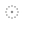

A little character at the cursor.
Three quiet directions to pair with the artwork. Move your cursor inside each box to try it at its actual size.
Hover to try
01 / Dotted hand
A playful touch for nudging petals. My pick for the existing petal interaction.
Hover to try
02 / Pencil tip
A tiny drawing tool that echoes the pencil in her hand.

Hover to try03 / Dot ring
The quietest option: a small, precise point with a dotted halo.
Artwork is enlarged above for comparison. The live cursors are small, theme-aware SVGs with native fallbacks. This preview uses custom cursors only inside the boxes.